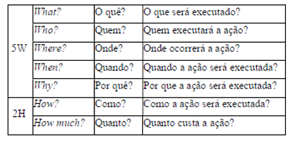

Para que o estudo da apostila de Investigação Policial III seja plenamente aproveitado, é essencial compreender alguns conceitos básicos. Eles funcionam como um alicerce, oferecendo a linguagem técnica comum e a lógica necessária para entender o planejamento e a execução das ações policiais. Com essa base inicial, será possível acompanhar, de forma completa e integrada, o conteúdo que será apresentado a seguir. a) Ação policial: é a ação praticada no desempenho das atividades de polícia administrativa ou judiciária. b) Deflagração de operação policial: deflagração é o desencade amento da fase ostensiva de uma investigação classificada como operação policial, abrangendo o cumprimento de mandados de busca e apreensão ou mandados de prisão, sem prejuízo de outras medidas cabíveis. c) Operação de Polícia Judiciária: é a operação policial que demanda a aplicação integrada de conhecimentos, técnicas e recursos especia lizados. Em outras palavras, consiste no conjunto de procedimentos coordenados pela polícia judiciária, que atende ao cumprimento de mandados judiciais ou possui complexidade extraordinária em sua execução.
Segundo normativo que regulamenta o Índice de Produtividade Operacional (IPO), configura-se operação de polícia judiciária decorrente do cumprimento de mandados judiciais quando, durante a investigação, ocorrer o cumprimento de mandado obtido por decisão judicial do qual resulte restrição ostensiva de direito do investigado. Além disso, também se configura operação de polícia judiciária decorrente da complexidade extraordinária de execução quando, independentemente do cumprimento de mandados judiciais, ocorrer uma das seguintes ações específicas: erradicação de plantio de cultivo ilícito; reintegração de posse; desintrusão de invasores ou destruição de maquinário empregado em atividade de exploração, em caso de crime ambiental; repressão ao trabalho análogo ao de escravo em conjunto com outro órgão; ou qualquer ação que resulte no resgate de vítima. d) Situação: é o estado atual e o conjunto de circunstâncias que podem interferir no desenvolvimento da ação ou operação policial. Engloba aspectos geográficos, políticos, econômicos, sociais, criminais, cultu rais, bem como recursos humanos, materiais e financeiros disponíveis. e) Objetivo: é o resultado que se pretende alcançar com a realização da ação ou operação policial. Deve ser preciso, coerente e factível. f) Área de atuação: é o espaço geográfico onde é realizada a ação ou operação policial. g) Linha de ação: é a estratégia traçada para alcançar o fim que se pretende com a ação ou operação policial. h) Tática policial: é a forma como a linha de ação deve ser executada, com o detalhamento do emprego dos recursos disponíveis na área de atuação. i) Missão policial: é a diligência ou o conjunto de diligências atribuídas a um determinado policial ou a uma equipe de policiais. Deve ser clara e precisa, permitindo sua exata compreensão. É determinada pela Ordem de Mobilização (OM), sendo os resultados informados à autoridade determinante no Relatório de Missão Policial (RMP) e, conforme o caso, na informação policial ou na informação de polícia judiciária. j) Plano operacional: é o documento que formaliza o planejamento operacional. Deve conter todos os elementos necessários ao plane jamento de uma operação policial, como situação, objetivo, área de atuação, linha de ação, tática policial, prazos, além dos recursos humanos, materiais e financeiros a serem empregados.
Na história da Polícia Federal podem ser identificadas fases distintas relaciona das ao emprego de técnicas de investigação policial, denotando a predominância de determinados métodos, de acordo com as diretrizes administrativas da instituição em cada momento. Tomando-se como marco inicial os idos de 1964, verifica-se que naquela década a Polícia Federal atuou como polícia política ou como braço policial das Forças Armadas em função do regime de exceção que se instalou no Brasil. Predominava a atuação com ênfase nas ações de polícia de ordem política e social. Como consequência de uma política protecionista do Estado, a atuação da Polícia Federal passou a ser centrada no combate ao contrabando e ao desca minho, notadamente de bebidas, soja, café e cigarros. Naquela conjuntura, os policiais federais receberam treinamento mais intenso das técnicas de vigilância e interrogatório, além do conhecimento voltado para recrutamento de informantes, o que fez com que as investigações focassem principalmente na apreensão do produto do crime, com a lavratura da prisão em flagrante delito, metodologia esta que por vezes não alcançava o núcleo principal do grupo criminoso.
Já a década de 1980 se caracterizou pela mudança da vertente investigativa. O foco passou a ser a repressão ao tráfico ilícito de drogas, notadamente ao tráfico internacional, uma vez que as estatísticas apontavam para o aumento considerável dessa atividade, ocasionado pelo surgimento de organizações criminosas estruturadas, fenômeno observado especialmente na Colômbia, com os cartéis de Cali e Medellín, bem como no Peru e na Bolívia. Os Estados Unidos da América incentivavam o combate ao tráfico de drogas e, através de acordos de cooperação internacionais, difundiram técnicas modernas de investigação, dando origem às primeiras equipes efetivamente operacionais das então Delegacias de Repressão a Entorpecentes (DRE).
No Brasil, os investimentos em infraestrutura de comunicações e transportes, principalmente no que diz respeito ao incremento da malha rodoviária e à construção de novos portos e aeroportos, favoreceram o surgimento de rotas de exportação de drogas ilícitas, levando o País a ser visto internacionalmente como corredor de tráfico de drogas produzidas nos países andinos.
O conjunto desses fatores fez com que as equipes de repressão a drogas saíssem na vanguarda da utilização das modernas técnicas de investigação, princi palmente a partir de 1996, com a edição da primeira legislação regulamentadora das interceptações das comunicações. Surgiram os primeiros “escritórios” de inteligência, constatando-se uma gradativa diminuição do emprego de informantes e das atividades de vigilância.
Ainda em meados da década de 1990, a Polícia Federal avançava em outra seara investigativa, voltada à análise de documentos e de dados financeiros. Nesse contexto deu-se origem à Divisão de Combate ao Crime Organizado e Inquéritos Especiais (DCOIE), na qual preponderava a análise de documentos e de movimentações bancárias, o que levou ao descortinamento de vultosas fraudes fiscais e financeiras no País, notadamente com a descoberta dos canais de evasão de divisas.
Diversas legislações deram novos contornos ao fortalecimento do trabalho investigativo que conhecemos hoje. Além da Lei nº 9.296/1996, utilizada para afastamento de sigilos telefônico, telemático e ambiental, podem ser citadas a Lei nº 9.034/1995 (já revogada), de combate ao crime organizado, e a Lei nº 9.613/1998, que trata da lavagem de ativos. Tais normativos trouxeram novos tipos penais e, principalmente, regulamentaram as técnicas especiais de investigação, disponibilizando ferramentas que muito contribuíram para os primeiros passos no enfrentamento de organizações criminosas complexas.
A partir do ano 2000, com a nova dinâmica da informação e do conhecimento, caracterizada pela movimentação constante e rápida das comunicações e pelo fluxo de capitais pelo mundo, a polícia se viu obrigada a mudar, mais uma vez, o foco investigativo. As organizações criminosas definitivamente se entranharam no aparato estatal. O crime organizado e a lavagem de ativos romperam fronteiras, que passaram a ser enxergadas como linhas virtuais. A prioridade da Polícia Federal passou a ser, então, o aperfeiçoamento da inteligência policial para fazer frente a essa nova criminalidade.
Mas isso não era o bastante. A Polícia Federal enfrentava as consequências do período em que foram restringidos os concursos públicos, o que interrompeu a oxigenação dos quadros policiais. Foi preciso adequar o ensino policial a essa realidade e dotar a Academia Nacional de Polícia dos meios necessários para promover a formação de novos policiais, com uma nova estrutura curricular. Essas medidas possibilitaram a renovação de dois terços do efetivo da Polícia Federal em apenas cinco anos.
O binômio planejamento operacional e inteligência policial passou a ser o escopo principal da capacitação dos policiais. Investiu-se permanentemente no aperfeiçoamento das técnicas operacionais e investigativas, bem como na aquisição de equipamentos inovadores.
A Polícia Federal passou a desenvolver investigações mais abrangentes, com foco na identificação e desestruturação de toda a rede criminosa. Aprimorou-se a coleta e análise de provas mediante a utilização simultânea de todos os recursos investigativos disponíveis ao aparato policial.
Com o aprimoramento das técnicas operacionais e investigativas foram obtidos resultados expressivos. Do princípio do ano de 2003 até dezembro de 2008, foram executadas 713 operações policiais, as quais resultaram na prisão de mais de 10.000 pessoas. Para ilustrar, a Polícia Federal realizou, nesse período, mais de duas operações policiais por semana, trabalhos esses que estavam sendo acom panhados diuturnamente pela sociedade por meio dos meios de comunicação.
A evidência institucional da Polícia Federal trouxe, sem dúvida, reconhecimento junto à população, que passou a acompanhar os trabalhos que estavam sendo realizados de forma técnica e profissional, com a obtenção de provas que levaram à responsabilização de pessoas até então inatingíveis. E esses resultados fizeram com que, na pesquisa intitulada “A imagem das instituições públicas brasileiras”, da Associação dos Magistrados Brasileiros (AMB), publicada em setembro de 2007, a Polícia Federal fosse considerada a instituição com maior grau de confiança junto à população brasileira, alcançando o índice de 75,5% de confiabilidade, à frente das Forças Armadas (74,7%), dos Juizados de Pequenas Causas (71,8%) e de outras instituições como imprensa, órgãos do Poder Judiciário, casas legislativas e partidos políticos.
Na mesma pesquisa, ao responder à pergunta “Qual instituição deve ser a mais relevante no combate à corrupção?”, 25,1% dos entrevistados apontaram Polícia Federal, enquanto 22,8% indicaram o Ministério Público e 12,9% mencionaram a sociedade civil.
Nos idos de 2008, a Polícia Federal apresentava-se à sociedade como uma instituição policial cujo desempenho já era comparado ao das melhores do mundo. À época, os policiais federais já estendiam investigações a outros continentes, dentro do conceito de mundo globalizado e da compreensão de que a cooperação policial é imprescindível para que se alcance o objetivo maior: o enfrentamento incondicional ao crime organizado transnacional.
Entretanto, em decorrência da contundência de seu trabalho e de sua ampla exposição pelos meios de comunicação, houve reação de alguns segmentos da sociedade, notadamente de parte da comunidade jurídica. Reflexo disso foi o surgimento de uma nova orientação jurisprudencial, tendente a limitar a concessão de medidas investigativas e coercitivas postuladas pela Polícia Federal.
Com as mudanças de entendimentos e decisões nos Tribunais Superiores acerca de elementos de provas colhidas na esfera policial, inclusive com anulações de grandes operações, as equipes de investigação foram compelidas a buscar outros modelos e estratégias em seus trabalhos, passando a restringir, desde o início a abrangência de alvos e a delimitação das hipóteses de ocorrência dos crimes investigados.
Diante desse cenário, a instituição aprimorou, com maior rigor, técnicas e metodologias aplicadas ao planejamento policial, conferindo especial destaque à qualidade da prova e à adequação jurídica dos instrumentos empregados.
Por outro lado, como consequência positiva dessa nova abordagem, as operações policiais passaram a buscar, desde seu início, indícios de materiali dade e autoria mais robustos. Nesse contexto, as medidas cautelares de busca e apreensão tornaram-se mais relevantes e, por vezes, passaram a ser requerida já na fase inicial das investigações, em contraste com a estratégia anteriormente adotada, quando se aguardava a compreensão quase integral do caso – muitas vezes por meio da interceptação telefônica, para somente então executar medidas ostensivas, como objetivo de complementar o entendimento de fatos ainda não esclarecidos e identificar práticas criminosas até então encobertas.
Essa antecipação das medidas ostensivas das buscas e apreensões, com aprofundamento da exploração dos locais de interesse, passou a ser adotada com maior frequência, contribuindo para o fortalecimento das operações da Polícia Federal, especialmente o que diz respeito à configuração de materialidade delitiva. Isso porque essa medida investigativa permite a localização de elementos de interesse diretamente no ambiente do investigado, tais como valores em espécie e outros ativos recebidos de forma ilícita, anotações em escritórios, registros de contabilidade do tráfico, divisões de propinas, mensagens contendo orientações para a prática de ilícitos e versões de documentos fraudados, entre outros.
Superada a análise destes materiais, se realizada em tempo hábil e da forma apropriada, verificou-se que era possível e eficiente conectar uma fase investigativa a outra, a partir dos elementos de provas colhidos na etapa anterior, servindo de suporte à fase seguinte, em um modelo sequencial que ficou consagrado na Operação Lava Jato.
Deve-se ressaltar que dificilmente teríamos a proliferação de operações que usaram a mesma abordagem sem a edição da Lei nº 12.850/2013, que trouxe novas possibilidades investigativas para toda a polícia judiciária, a partir da ampliação do conjunto de meios de produção de prova postos à disposição do investigador. Mesmo no caso de técnicas já conhecidas, como a colaboração premiada, houve melhor detalhamento em seus procedimentos, possibilitando a ampla aplicação das medidas.
No Brasil, o impacto da Lei contra organizações criminosas pode estar diretamente relacionado ao crescente número de operações de polícia judiciária da Polícia Federal a partir de 2014, um ano após sua edição, saltando de 301 operações em 2013 para 390 operações em 2014. Houve aumento significativo em 2015 (516 operações), 2016 (550 operações) e 2017 (538 operações), conforme consta no Relatório de Gestão do Exercício de 2017, da Polícia Federal, mantendo-se nesses patamares até 2019.
Pode-se inferir que, a partir da edição da Lei nº 12.850/2013, diante de estruturas criminosas cada vez mais complexas e motivados pela necessidade de conversão dos resultados das investigações em relatórios cada vez mais robustos e consistentes, os investigadores perceberam que poderiam utilizar essa legislação para atingir seu objetivo de aprofundar investigações relevantes. Passaram, então, a realizar o máximo de diligências e técnicas de forma simultânea, utilizando os novos meios de produção de provas em conjunto com diligências de execução direta pela equipe policial.
O resultado deste esforço, com uso de múltiplas camadas investigativas, pode ser chamado de “investigação qualificada”, na qual as conclusões sobre a ocorrência de um fato ou sobre os elementos de um delito podem ser confir madas por várias vias investigativas, conferindo maior segurança ao resultado final do trabalho. Isso, sem dúvida, fortalece o conjunto probatório e ampliar as possibilidades de esclarecimento quanto à autoria delitiva.
Paralelamente a esse movimento de qualificação da investigação, houve a incorporação da estratégia das descapitalização das organizações criminosas por intermédio da investigação criminal, especialmente a partir de 2004, com a especialização das Varas Criminais de lavagem de dinheiro na Justiça Federal e das Delegacias, Núcleos e Grupos especializados em lavagem de dinheiro na Polícia Federal.
O crescimento da investigação patrimonial como estratégia de repressão à criminalidade organizada foi potencializado a partir de 2023, com a criação da rede RECUPERA pelo MJSP2, composta de representantes de todas as secretarias do Ministério da Justiça e Segurança Pública, de policiais civis e federais de todos os Estados da Federação3. A partir de encontros técnicos e capacitações conjuntas, foi desenvolvida uma metodologia específica que abrange desde a fase inicial de investigação, com a identificação do produto e proveito da prática ilícita investigada, até a fase operacional ostensiva de apreensão, administração, alienação e destinação desses bens ilícitos. Essa evolução culminou, em 2025, na publicação da Portaria MJSP nº 870/2025, com a institucionalização de uma Política Nacional de Recuperação de Ativos, colocando o Brasil na vanguarda nessa temática.
Esse movimento impactou, inclusive, na própria Instrução Normativa nº 255/2023-DG/PF, que regulamenta a atividade de polícia judiciária no âmbito da Polícia Federal e que, com a alteração promovida pela IN DG/PF nº 308, de 14 de abril de 2025, passou a prever como objetivo do inquérito policial - e, portanto, da investigação policial - a promoção da recuperação de ativos nos crimes com repercussão econômica.
Outro movimento relevante que impactou na forma da Polícia Federal atuar decorreu da modificação de alguns entendimentos já consagrados acerca de competência jurisdicional. Tal mudança resultou na anulação de inúmeras operações policiais de grande visibilidade social, de modo que a validade de determinados métodos investigativos passou a ser revista, como a condução coercitiva - amplamente utilizada durante a deflagração de operações policiais, bem como a abrangência de alguns meios de prova foi reduzida, a exemplo da colaboração premiada, que passou a ser definitivamente desconsiderada quando não acompanhada de outros elementos robustos de corroboração probatória, e o uso de Relatório de Inteligencia Financeira (RIF). 2 Portaria MJSP nº 533/2023. 3 No âmbito da Polícia Federal, a Portaria DICOR/PF nº 66, de 22 de fevereiro de 2024 estabeleceu normas para a criação de Grupos de Trabalho para a Recuperação de Ativos e Repressão à Lavagem de Dinheiro – GRALs.
Paralelamente, também houve alterações legislativas relevantes, como a edição da Lei nº 13.869/2019, que introduziu novos enquadramentos para o crime de abuso de autoridade, ampliando sua incidência sobre as condutas daqueles que atuam na persecução penal, e a Lei nº 14.365/2022, que alterou alguns dispositivos do Estatuto da Advocacia e da Ordem dos Advogados do Brasil, criando novos requisitos de buscas em escritórios de advocacia, além de uma uma série de embaraços à arrecadação e à análise dos materiais apreendidos. Tais circunstâncias passaram a exigir maior planejamento e zelo redobrado dos policiais, gerando novos desafios para a atividade de polícia judiciária.
Restou evidenciado que determinados posicionamentos adotados durante a investigação e a deflagração de operações policiais podem extrapolar a anulação de um inquérito específico, sendo capazes de alterar entendimentos jurisprudenciais consolidados e influenciar a edição de legislações que asfixiam a capacidade investigativa, em reveses que reverberam em todo sistema de persecução penal brasileiro, imprimindo o tom e a responsabilidade que devem sempre orientar o investigador e a própria instituição.
Dessa forma, torna-se premente a necessidade de revisar e atualizar o modelo de gestão das operações de polícia judiciária, em conjunto com a adoção de novos mecanismos institucionais que coíbam desvios e excessos eventualmente cometidos por servidores no exercício da atividade de polícia judiciária. Busca-se, assim, conferir maior destaque à ética e à responsabilidade social da atuação policial, tema que figura como prioritário entre os programas estratégicos do Projeto de Transformação Organizacional - Nova PF 80.
Neste sentido, a revisão da doutrina de planejamento operacional da Polícia Federal estará baseada em um trinômio, que deverá ser perseguido por todos os servidores da instituição: 1 - qualidade, autonomia e responsabilidade; 2 supervisão e controle (de qualidade); 3 - foco no resultado (desempenho), e não no esforço.
Nas atividades desempenhadas pelo ser humano, é possível identificar proce dimentos sistematizados de forma sequencial que buscam facilitar a execução de atos com vistas ao alcance de determinado objetivo. Muitas vezes, tais procedi mentos são realizados de forma mecânica e inconsciente, como consequência de hábitos adquiridos. Certo é que esses procedimentos podem ser aperfeiçoados, a fim de se obter resultados mais objetivos e eficientes. Isso é possível por meio do planejamento.
Na área de segurança pública, não é diferente. As instituições policiais que investem no planejamento operacional de suas unidades evitam o improviso e apresentam resultados diferenciados e mais eficazes. Para tanto, é imperioso o uso de ferramentas que auxiliem no exame da realidade, na elaboração de diag nósticos, na avaliação de alternativas e na construção de um referencial futuro, estruturando, assim, o caminho adequado para se alcançar o objetivo almejado.
No âmbito da Polícia Federal, esse processo é desenvolvido mediante a utili zação de metodologias de planejamento, ora voltadas para ações estratégicas, ora voltadas para ações operacionais. O planejamento estratégico é elaborado nos mais elevados níveis hierárquicos da instituição, com objetivos de longo prazo, visando ao aumento da eficiência institucional, de acordo com as diretrizes estabelecidas. Não se confunde com o planejamento operacional, que constitui, em última análise, uma das principais ferramentas para se atingir os objetivos do planejamento estratégico.
O planejamento operacional é uma atividade ordenada e sistematizada que visa estabelecer a estratégia necessária à consecução dos fins pretendidos em uma ação ou operação policial, a partir da análise da situação fática e da previsão de respostas adequadas aos seus possíveis desdobramentos, otimizando-se, assim, os recursos disponíveis. Na Polícia Federal, tanto as ações como as operações policiais demandam planejamento prévio para a sua realização.
O planejamento de ações rotineiras pode ser feito de forma simplificada e até mentalmente. Já as operações policiais, em razão de sua dimensão e complexi dade, sempre demandam a formalização do planejamento operacional.
No que tange ao planejamento operacional, podemos dividi-lo em seis etapas, a saber:
a) exame de situação;
b) definição da linha de ação;
c) elaboração do plano operacional;
d) aprovação e autorização do plano operacional;
e) deflagração da operação policial; e
f) avaliação do planejamento operacional.
Embora as etapas acima estejam apresentadas de forma didática e sequencial, na prática nem sempre é possível segui-las de maneira rígida ou totalmente linear. Muitas vezes, as circunstâncias da investigação e as necessidades operacionais impõem ajustes, sobreposições ou até mesmo a execução simultânea de fases distintas. Ainda assim, a divisão em etapas é fundamental para fins de estudo e compreensão, permitindo ao aluno visualizar de maneira organizada cada momento do planejamento. A seguir, detalha-se cada uma dessas fases, com suas características e objetivos específicos. a) Exame de situação: consiste na coleta, análise e síntese dos dados que compõem a situação que, conforme já conceituado, corresponde ao estado atual e o conjunto de circunstâncias que podem interferir no desenvolvimento da ação ou operação policial. Nessa etapa, é realizado o levantamento preliminar dos fatos relacionados à ação ou operação policial na qual a aplicação de métodos organizacionais como o 5W2H (o quê, quem, onde, quando, por quê, como e quanto) pode apresentar grande utilidade. No exame de situação, etapa inicial do planejamento operacional, são identi ficadas e analisadas as circunstâncias geográficas, políticas, econômicas, sociais, criminais e culturais da área de atuação, bem como os demais elementos que possam interferir no planejamento e na execução da ação ou operação policial. b) Definição da linha de ação: consiste na escolha da estratégia mais adequada para alcançar o objetivo da investigação. A linha de ação deverá ser definida com base em critérios de conveniência e opor tunidade, bem como na análise dos recursos disponíveis, devendo sempre ser compatível com o objeto da investigação. c) Elaboração do plano operacional: é a formalização, em docu mento próprio, do planejamento operacional. O plano operacional deve ser claro, preciso e conter todos os elementos que envolvam a operação, oportunidade na qual deverão ser destacados os prazos e definidos os recursos humanos, materiais e financeiros necessários. A elaboração do plano operacional é indispensável no planejamento das operações de polícia judiciária. d) Aprovação e autorização do plano operacional: trata-se da submissão do plano operacional às autoridades policiais compe tentes, que avaliarão a oportunidade, a conveniência, o conteúdo e a possibilidade de disponibilização dos meios necessários para viabilizar a operação policial. Em regra, a aprovação cabe à chefia imediata, e a autorização, ao gestor regional. e) Deflagração da operação policial: após a aprovação da chefia imediata e a autorização do gestor regional, o plano operacional será colocado em prática. Nessa etapa, são executadas as medidas previamente planejadas, com a execução das ações policiais. f) Avaliação do planejamento operacional: destina-se à aferição de todas as circunstâncias ocorridas no processo de planejamento e execução da operação. Pode ser realizada por meio de reunião
com o efetivo empregado, bem como por formulários e sistemas
próprios de gestão. O objetivo dessa etapa é angariar subsídios
para o aperfeiçoamento de operações futuras, evitando a repetição
de erros ou falhas.
Os métodos organizacionais desempenham papel essencial no planejamento e na execução das operações policiais, pois oferecem instrumentos capazes de conferir ordem, clareza e objetividade ao trabalho do investigador.
Por intermédio deles, é possível estruturar ideias, organizar informações e estabelecer prioridades, de forma a aumentar a eficiência na busca do objetivo final. Importa destacar, contudo, que não existe um método único ou de aplicação obrigatória: trata-se de ferramentas de apoio, sugestões que podem ser utilizadas de acordo com a conveniência da investigação e a experiência do responsável pelo planejamento.
Nesse sentido, destacam-se alguns modelos amplamente empregados em processos de gestão organizacional e que foram adaptados ao contexto da atividade policial.
a) Método 5W2H (Heptâmetro de Quintiliano): Traduz-se nos questiona mentos apresentados na tabela abaixo:

A utilização do método 5W2H facilita a elaboração do planejamento de ações e operações policiais pois viabiliza descrever atividades e programas que devem ser claramente definidos para atingir o resultado pretendido.
b) Método PDCA: a ferramenta de gestão conhecida como ciclo PDCA, ou ciclo de desenvolvimento, é outra metodologia que, a exemplo da ferramenta 5W2H, pode ser aplicada à atividade de planejamento de operações policiais.
O ciclo PDCA objetiva tornar mais claros e eficientes os processos envolvidos na execução da gestão e se divide em quatro núcleos: planejar (plan), executar (do), verificar (check) e agir corretivamente (action). É possível identificar os núcleos do ciclo PDCA no desenvolvimento do planejamento operacional.
Nesse contexto, correlaciona-se o núcleo P (plan) ao exame de situação e à consequente definição da linha de ação; o núcleo D (do), com o desencadea mento da operação; o C (check), à avaliação do planejamento operacional; e, por sua vez, o núcleo A (action) revela-se nas ações corretivas e na solução de circunstâncias não previstas no curso da operação policial.
c) Método F3EAD adaptado: método de investigação policial que a PF come çou a usar com mais intensidade a partir do ano de 2016, revelando-se mais uma opção à disposição do presidente da investigação quanto à forma de condução dos trabalhos, inclusive na deflagração de operações policiais.
Sua origem remonta à atuação das forças armadas norte-americanas4. Em síntese, consiste no que se convencionou chamar de fusão do método de locali zação e neutralização (localização do alvo, delimitação de sua área de atuação e finalização - find, fix, finish, os chamados 3Fs ou F3), acrescido do caminho empregado da atividade de inteligência (obtenção, reunião, análise dos dados e difusão - exploit, analyze, disseminate, o EAD), gerando conceito de aceleração do ritmo operacional.
O método F3EAD adaptado tem sua origem justamente na adequação do método F3EAD à realidade da investigação policial e ao Estado Democrático de Direito. Uma forma de visualizar a aplicação do método F3EAD adaptado na deflagração de uma operação policial é quando se concede maior autonomia e consciência da investigação para a equipe de cumprimento de mandados.
Com base nas informações passadas no briefing, os policiais envolvidos em buscas e prisões, por exemplo, podem analisar documentos, aparelhos telefônicos e mídias durante a deflagração, para identificar e extrair informações de interesse 4 SILVA, Élzio Vicente da. Operações Especiais de Polícia Judiciária. Barueri, SP. Novo Sé culo. 2017; SILVA, Élzio Vicente da e RIBEIRO, Denisse Dias Rosas. Colaboração Premiada e Investigação - Princípios, vulnerabilidades e validação da prova obtida de fonte humana. São Paulo: Novo Século. 1ed. 2018. ainda durante o desencadeamento da ação, com a elaboração de Informação de Polícia Judiciária e do Relatório de Diligências, que sejam capazes de subsidiar novas ações, até mesmo no dia da deflagração, em observância ao princípio da oportunidade.
O reflexo desta metodologia de investigação no planejamento de operações policiais tem por foco a tentativa de esclarecer o fato criminoso prestigiando a ação (ou finish) por meio da realização rápida das etapas da investigação no menor tempo possível, comprimindo a espiral investigativa.